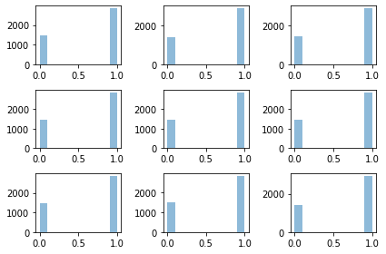
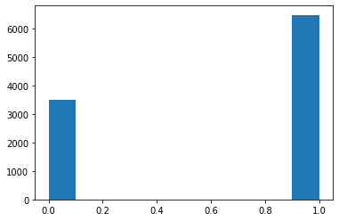

07wk-2: 마코프체인 (3)
4/13/23
강의영상
youtube: https://youtube.com/playlist?list=PLQqh36zP38-zAMowm9anbqZG0fCAmFI_1
import
날씨모형 리뷰
formular
- 저번시간에 살펴본 날씨모형은 결국 아래와 같은 모형이었다.
\[\begin{bmatrix} P(X_{t+1}=0) \\ P(X_{t+1}=1) \end{bmatrix}= \begin{bmatrix} 0.8 & 0.1 \\ 0.2 & 0.9 \end{bmatrix} \begin{bmatrix} P(X_{t}=0) \\ P(X_{t}=1) \end{bmatrix}\]
양변에 트랜스포즈를 취하게 되면
\[\begin{bmatrix} P(X_{t+1}=0) & P(X_{t+1}=1) \end{bmatrix}= \begin{bmatrix} P(X_{t}=0) & P(X_{t}=1) \end{bmatrix}\begin{bmatrix} 0.8 & 0.2 \\ 0.1 & 0.9 \end{bmatrix} \]
수식화하면 아래와 같이 된다. (보통 이러한 형태로 책에 많이 쓰니까 이 형태로 외울것!)
\[{\boldsymbol \mu}_{t+1}^\top ={\boldsymbol \mu}_{t}^\top {\bf P}\]
참고: \(X_t\)는 0 혹은 1의 값을 가질수 있는데, 이렇게 \(X_t\)가 가질 수 있는 값들을 모은 공간을 상태공간이라고 하고 기호로는 \(V=\{0,1\}\)와 같이 표현한다.
참고: 여기에서 확률과정 \(\{X_t\}\)는 이전시점의 값 \(X_{t-1}\)에 의하여서만 결정된다. 이러한 확률과정을 마코프체인이라고 한다.
참고: 이때 매트릭스 \({\bf P}\)를 transition matrix 라고 한다.
- \({\bf P}\)의 의미 (\(\star\))
\({\bf P}\)의 각 원소를 아래와 같이 두자.
- \({\bf P} = \begin{bmatrix} p_{00} & p_{01} \\ p_{10} & p_{11} \end{bmatrix}\)
\({\bf P}\)의 \((i,j)\)의 원소는 \(i \to j\)로 이동할 확률을 의미한다. 즉 \(p_{00}\), \(p_{01}\), \(p_{10}\), \(p_{11}\) 은 각각 아래를 의미한다.
- \(p_{00}\): \(0 \to 0\)일 확률. 즉 \(P(X_t = 0 | X_{t-1} = 0)\)
- \(p_{01}\): \(0 \to 1\)일 확률. 즉 \(P(X_t = 1 | X_{t-1} = 0)\)
- \(p_{10}\): \(1 \to 0\)일 확률. 즉 \(P(X_t = 0 | X_{t-1} = 1)\)
- \(p_{11}\): \(1 \to 1\)일 확률. 즉 \(P(X_t = 1 | X_{t-1} = 1)\)
- \({\boldsymbol \mu}\)의 의미 (\(\star\))
- \({\boldsymbol \mu}_t\)는 \(X_t\)의 pmf를 의미한다.
- \({\boldsymbol \mu}_0\)는 \(X_0\)의 pmf를 의미한다. 즉 초기분포를 의미한다.
- \({\boldsymbol \mu}\)자체가 어떠한 분포를 의미한다.
특징들
- 특징1: \({\bf P}\)는 수렴한다. 즉 \({\bf P}^{\infty}\)가 존재한다.
np.linalg.matrix_power(P,1),np.linalg.matrix_power(P,10),np.linalg.matrix_power(P,30),np.linalg.matrix_power(P,50)(array([[0.8, 0.2],
[0.1, 0.9]]),
array([[0.35216502, 0.64783498],
[0.32391749, 0.67608251]]),
array([[0.33334836, 0.66665164],
[0.33332582, 0.66667418]]),
array([[0.33333335, 0.66666665],
[0.33333333, 0.66666667]]))- 특징2: \({\bf P}^{\infty}\)의 each column은 모두 동일한 값을 가진다. \(\Rightarrow\) \(\mu\)에 어떠한 값을 넣어도 \({\boldsymbol \mu}^\top{\bf P}^{\infty}={\boldsymbol \pi}^\top = [1/3, 2/3]\) \(\Rightarrow\) \({\bf P}\)의 아무 row 나 선택하여 그것을 \({\boldsymbol \pi}^\top\)라고 두자. \({\boldsymbol \pi}\)는 \(X_{\infty}\)의 pmf가 된다.
- \(X_{\infty}=\begin{cases} 0 & w.p.~ 1/3 \\ 1 & w.p.~ 2/3 \end{cases}\)
참고: 여기에서 \({\boldsymbol \pi}\)를 확률과정 \(\{X_t\}\)의 정상분포 (stationary distribution) 라고 한다.
- 특징3: \({\boldsymbol \pi}^\top {\bf P} = {\boldsymbol \pi}^\top\) 가 성립한다.
- 근데 이건 왜 이러지?
당연히 다른 분포 \({\boldsymbol \mu}\)에 대하여서는 성립하지 않음
참고: 여기에서 수식 \({\boldsymbol \pi}^\top {\bf P} = {\boldsymbol \pi}^\top\) 자체가 정상분포의 정의가 된다. 즉 마코프체인 \(\{X_t\}\)의 트랜지션 매트릭스가 \({\bf P}\)일때, \({\boldsymbol \pi}^\top {\bf P} = {\boldsymbol \pi}^\top\)를 만족하는 \({\boldsymbol \pi}\)가 존재한다면 \({\boldsymbol \pi}\)를 확률과정 \(\{X_t\}\)의 정상분포라고 한다.
- 특징4: 초기분포 \({\boldsymbol \mu}_0\)를 \({\boldsymbol \pi}\)로 설정하면 \(\{X_t\}\)는 모든 \(t\)에 대하여 동일한 분포를 가진다. (독립은 아니다)
array([[False, False, True, ..., True, True, True],
[ True, True, True, ..., True, False, False],
[ True, True, True, ..., True, True, True],
...,
[ True, True, True, ..., True, True, True],
[ True, True, True, ..., False, False, False],
[False, True, False, ..., False, False, False]])fig, ax = plt.subplots(3,3)
ax[0][0].hist(arr[:,0]*1,alpha=0.5);
ax[0][1].hist(arr[:,500]*1,alpha=0.5);
ax[0][2].hist(arr[:,1000]*1,alpha=0.5);
ax[1][0].hist(arr[:,1500]*1,alpha=0.5);
ax[1][1].hist(arr[:,2000]*1,alpha=0.5);
ax[1][2].hist(arr[:,2500]*1,alpha=0.5);
ax[2][0].hist(arr[:,3000]*1,alpha=0.5);
ax[2][1].hist(arr[:,3500]*1,alpha=0.5);
ax[2][2].hist(arr[:,4000]*1,alpha=0.5);
fig.tight_layout()
(array([3512., 0., 0., 0., 0., 0., 0., 0., 0.,
6489.]),
array([0. , 0.1, 0.2, 0.3, 0.4, 0.5, 0.6, 0.7, 0.8, 0.9, 1. ]),
<BarContainer object of 10 artists>)
특징4의 변형: 초기분포가 \({\boldsymbol \pi}\)가 아니더라도 적당한 시점 \(T_0\) 이후에는 \(\{X_t\}_{t\geq T_0}\)는 동일한분포를 가진다고 볼 수 있다.
참고: 특징4는 후에 MCMC를 이해하는 중요한 예제가 된다.
특징3을 위한 약간의 해설
편의상 \({\bf P}^{\star}={\bf P}^{\infty}\) 라고 하자. 이미 살펴본 것 처럼
- \({\bf P}^\star {\bf P} = {\bf P}^\star\)
가 성립한다. 특징2에서 살펴본것 처럼 임의의 \({\boldsymbol \mu}\)에 대하여 \({\boldsymbol \mu}^\top {\bf P}^{\star} = {\boldsymbol \pi}^\top\) 가 항상 성립함을 확인할 수 있다. 이 수식을 살짝 변형하면
- \({\boldsymbol \mu}^\top {\bf P}^{\star} = {\boldsymbol \pi}^\top\)
- \(\Rightarrow ({\boldsymbol \mu}^\top{\bf P}^{\star}){\bf P} = {\boldsymbol \pi}^\top\)
- \(\Rightarrow {\boldsymbol \pi}^\top{\bf P} = {\boldsymbol \pi}^\top\)
이다. 따라서 특징3이 유도된다.